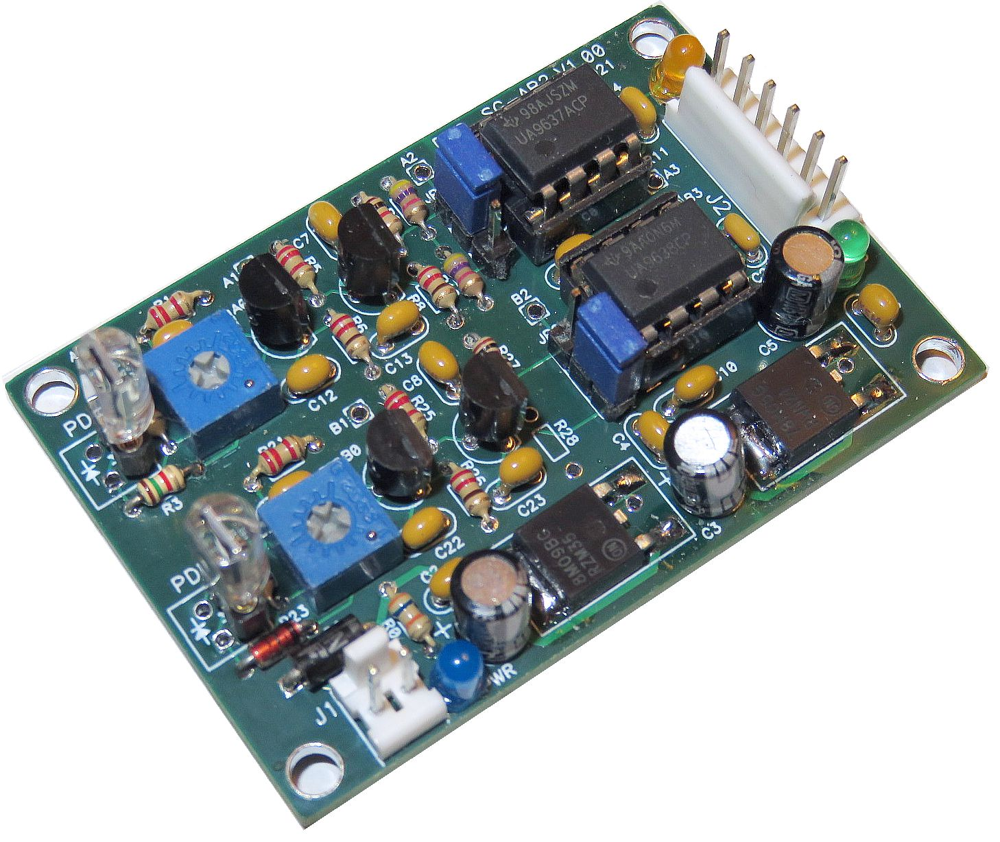
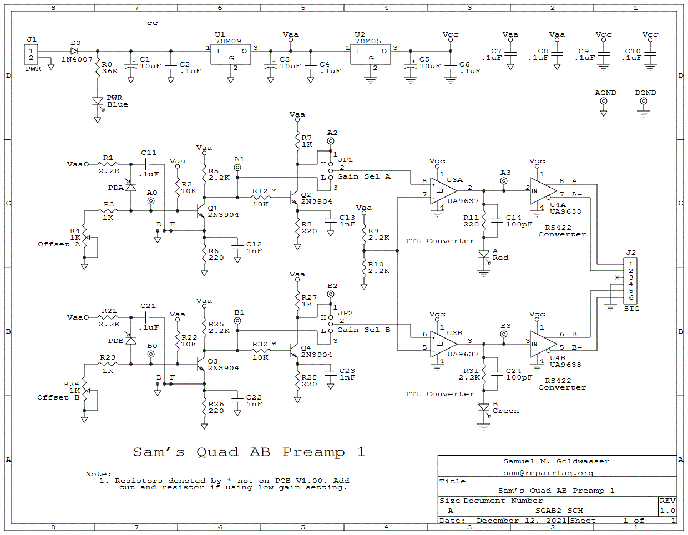
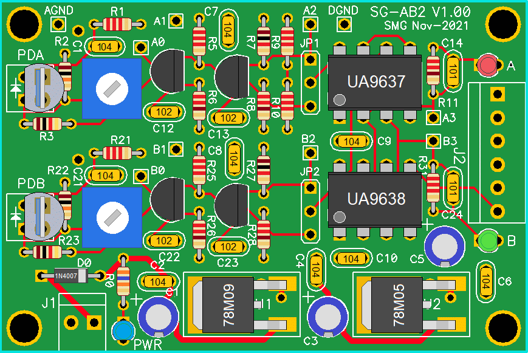

Assembly and Operation Manual
For contact info, please see the Sci.Electronics.Repair FAQ Email Links Page.
Copyright © 1994-2022
Reproduction of this document in whole or in part is permitted if both of the
following conditions are satisfied:
1. This notice is included in its entirety at the beginning.
Homodyne interferometry and optical encoders require conversion from the
optical detectors to so-called Quad-A-B signals. At low speed, this is not
much more than a photodiode with load resistor and digital comparator.
And parts like that are included in the various interferometer and entry-level
displacement masurement systems. But such a simple scheme is limited to a
few thousand counts per second - perhaps up to a few 10s of thousand of counts
per second - but not the performance needed for most real applications.
For example, to track motion at 1 cm/s using a plane mirror interferometer
would require more than 60,000 counts/second (where 1 c/s is equivalent to
1 Hz).
The purpose of the Quad-A-B Preamp (henceforth referred to as QAB2 or simply
AB2) is to provide a simple solution that accepts photodiode
inputs and generates differential RS422 A and B signals that can be input
to µMD0, µMD1, µMD2, or another compatible displacement
measuring system. This is not the ultimate device as it is strictly
digital Quad-A-B not analog Quad-Sin-Cos. Nor does it have support for
an intensity channel to accomodate a varying input amplitude.
Those capabilities may come in the future, but don't hold your
breath in anticipation. ;-)
QAB2 is on a 1.6 inch by 2.25 inch PCB and runson 12 to 15 VDC. (The PCB
itself is called SG-AB2.)
The optical input is a beam up to ~3 mm in diameter (using the default
photodiode) with an optical power from <25 µW to >1 mW.
The actual photodiodes may be mounted up to a few inches from their
pads on the PCB but coax or twisted pair should be used beyond that
where noise pickup may be a concern.
QAB2 has >3 MHz bandwidth (full cycle) which is more than adequate for
systems using the kit lasers as well as for many real applications.
With a Linear Interferometer which has a full
cycle of ~316 nm, the slew rate can be greater than 1 meter per second,
which is a fairly nutty velocity. ;-). And it is expected
that the bandwidth limit can be extended with trivial changes to only a few
part values. This is left as an exercise for the student. ;-)
The actual SG-AB2 PCB is four layers with internal power and ground planes.

And yes, a careful examination will show that a couple parts do not match
the schematic or layout, below. Some experimentation is underway, and there
is a minor "oops". ;-) More on that later. And I was all out of red LEDs,
so the A SIG LED is orange for the photo. ;-)
While the photodiodes are shown plugged into sockets on the PCB, in actual
practice, they will likely be on the quad decoder PCB with short cables
connecting them. This was for testing. A companion quad decoder PCB for
the photodiodes is planned, though the QD1 PCB can be used with minor
modifications.
All Rights Reserved
2. There is no charge except to cover the costs of copying.
DISCLAIMER
SG-AB is intended for use in hobbyist, experimental, research, and other
applications where a bug in the hardware will not
have a significant impact on the future of the Universe or anything else.
We will not be responsible for any consequences
of such bugs including but not limited to damage to the wafer FAB you
picked up on eBay for $1.98 + shipping, financial loss from the use of
37 spools of ABS due to the office 3-D printer fabricating a part 25.4x
too large in all dimensions, or bruising to your pet's ego from any number
of causes directly or indirectly related to SGAB2. ;-)
Introduction
Note: Local links and clickable graphics open in a single
new tab or window depending on your browser's settings.
Populated AB2 V1.00 PCB
Specifications
Parts List
The Digikey
CART for SG-QAB2 V1.00 PCB has most of the required parts.
This can be edited to add or delete parts as desired. Where the quantity
is larger than required, it means the cost was probably lower. ;-)
And it's probably silly to pay exorbitant prices for common parts
like LEDs. Disclaimer: There may be errors in this CART! ;-)
The UA9637 8 pin DIP is no longer available at Digikey unless you can find a use for 750 of them. ;-) So that part would need to be obtained elsewhere. If you are buying the SG-QAB2 PCB from me, I can provide a small number of them at reasonable cost.
Note: Due to an apparent bug in the Digikey Cart loader, a few invalid part number errors may appear, but the parts will load OK.
Note: There are gaps in some part number sequences by design. ;-)
Prt Description Comments
-------------------------------------------------------------------------
- PCB, SG-AB2 V1.00 First released version
D0 Diode, 1N4149 or similar Reverse polarity power protection
C1 Capacitor, 10-22 µF Input power bypass
C2 Capacitor, 0.1 µF Input power bypass
C3 Capacitor, 10-22 µF +9 Vaa bypass
C4 Capacitor, 0.1 µF +9 Vaa bypass
C5 Capacitor, 10-22 µF +5 Vcc bypass
C6 Capacitor, 0.1 µF +5 Vcc bypass
C7 Capacitor, 0.1 µF +9 Vaa bypass
C8 Capacitor, 0.1 µF +9 Vaa bypass
C9 Capacitor, 0.1 µF +5 Vcc bypass
C10 Capacitor, 0.1 µF +5 Vcc bypass
C11 Capacitor, 0.1 µF PDA feedback or bypass
C12 Capacitor, 1 nF 1st stage A frequency compensation
C13 Capacitor, 1 nF 2nd stage A frequency compensation
C21 Capacitor, 0.1 µF PDB feedback or bypass
C22 Capacitor, 1 nF 1st stage B frequency compensation
C23 Capacitor, 1 nF 2nd stage B frequency compensation
R0 Resistor, 36K, 1/8 W PWR LED current limiting
R1 Resistor, 2.2K, 1/8 W 1st stage A power
R2 Resistor, 10K, 1/8 W 1st stage A bias
R3 Resistor, 1K, 1/8 W PDA load
R4 Trim-pot, 1K PDA load trim
R5 Resistor, 2.2K, 1/8 W 1st stage A collector load
R6 Resistor, 220, 1/8 W 1st stage A emitter load
R7 Resistor, 2.2K, 1/8 W 2nd stage A collector load
R8 Resistor, 220, 1/8 W 2nd stage A emitter load
R9 Resistor, 2.2K, 1/8 W RS422 receiver threshold
R10 Resistor, 2.2K, 1/8 W RS422 receiver threshold
R11 Resistor, 220, 1/8 W LED A current limiting
R12* Resistor, 10K, 1/8 W 2nd stage A base current limiting
R21 Resistor, 2.2K, 1/8 W 1st stage B power
R22 Resistor, 10K, 1/8 W 1st stage B bias
R23 Resistor, 1K, 1/8 W PDB load
R24 Trim-pot, 1K PDB load trim
R25 Resistor, 2.2K, 1/8 W 1st stage B collector load
R26 Resistor, 220, 1/8 W 1st stage B emitter load
R27 Resistor, 2.2K, 1/8 W 2nd stage B collector load
R28 Resistor, 220, 1/8 W 2nd stage B emitter load
R31 Resistor, 2.2K, 1/8 W LED B current limiting
R32* Resistor, 10K, 1/8 W 2nd stage B base current limiting
U1 LM78M09, IC, Regulator, 9V Vaa 9 V regulator (SMT)
U2 LM78M05, IC, Regulator, 5V Vcc 5 V regulator (SMT)
U3 IC, UA9637 RS422 receiver
U4 IC, UA9638 RS422 driver
PDA Silicon photodiode, Osram Optical sensor A
SFH206K or similar
PDB Silicon photodiode, Osram Optical sensor B
SFH206K or similar
PWR LED, blue Power LED
A LED, red or orange A LED
B LED, green B LED
Q1 Transistor, 2N3904 1st stage A (impedance matching)
Q2 Transistor, 2N3904 2nd stage A (gain)
Q3 Transistor, 2N3904 1st stage B (impedance matching)
Q4 Transistor, 2N3904 2nd stage B (gain)
J1 Header/shell/pins or Screw Power input
terminal block, 2 pin
J2 Header/shell/pins or screw Signal output
terminal block, 6 pin
J3 Header/shell/pins or screw For photodiode A if attached with cable
terminal block, 2 pin
J4 Header/shell/pins or screw For photodiode B if attached with cable
terminal block, 2 pin
JP1 Jumper block, 3 pin Gain select A
JP2 Jumper block, 3 pin Gain select B
SKT1 Socket, 8 pin For UA9637
SKT2 Socket, 8 pin For UA9638
SKT3 Socket, 2 pin For PDA if installed directly
SKT4 Socket, 2 pin For PDB if installed directly
For those not familiar with the common resistor color code (Black/0, Blown/1, Red/2, Orange/3, Yellow/4, Green/5, Blue/6, Violet/7, Gray/8, White/9), the resistors shown above are 150 ohms (brown-green-brown or 15 with 1 zero) ohms and 330 ohms (33 with 1 zero) ohms. The gold stripe indicates 5 percent tolerance on the value but for the use here, tolerance doesn't matter. (It's possible the resistors you use will have 4 stripes where 3 of them are the value and the 4th is the multiplier, along with one for tolerance. If in doubt confirm the value with a multimeter.) The chart below is from Digikey. (If the link decays, a Web search will readily find another one.)
All of these resistors are 1/8 watt which are a bit tiny. So, use a bright light and magnifying glass if necessary as it's easy to confuse locations and color of the bands. If in doubt, measure the resistance with a DMM. As they say in woodworking: "Measure twice and cut once". Replacing a part is much more difficult and risky than installing the correct one in the first place!
The direction of the resistors doesn't matter though it is good practive to have them line up with the labels on the PCB. The polarity of the diodes, electrolytic (large value) capacitors, and the photodiode IS critical. Refer to the layout diagram, above.
The yellow ceramic capacitors are labeled on one side with two digits (always "10" for the values used in QAB2) and a multiplier as power of 10: 102 (1,000 pF, 1 nF), 103 (10,000 pF, or 10 nm), or 104 (100,000 pF, 100 nm, 0.1 µF). The diodes are labeled in itty-bitty print.

The graphic below shows the general appearance of the PCB with most of the parts installed:

Printing out the schematic and having it available for reference while assembling the PCB may be helpful.
All components are through-hole except for the voltage regulators (U1 and U1), and except as noted in the detailed assembly procedure, should seat flush on the PCB. They shouldn't be suspended in mid-air swinging in the breeze. :) The resistors in particular like to not stay flat on the PCB unless their leads are bent at a steep angle. Most components are identified on the silk-screen and with only a few exceptions, the label won't be obscured when the part is installed.
A low power soldering iron with narrow tip and thin (e.g., #22 AWG) rosin-core solder will be required. DO NOT even think about attempting this without suitable soldering equipment. It's well worth the investment. A Weller soldering gun or propane torch will not work. :) Rosin core solder is also essential. And while I'm quite confident that you never make mistakes, a means of component removal such as a de-soldering pump (e.g., a full size SoldaPullt™) will be highly desirable. Screwing up component removal can easily ruin the PCB and is not covered under the limited unlimited warranty. :-)
Proper soldering technique will be such that the exposed solder on each pad should be shiny with a concave profile. It should not be a blob and just needs to fill the hole. Solder is not glue. Some excess solder doesn't hurt anything but looks unprofessional. A 10X magnifier may come in handy for inspection. Residual rosin can be cleaned off with isopropyl alcohol or an environmentally-friendly electronic solvent. However, leaving the rosin alone is also acceptable (if ugly).
Total assembly time should be well under 1 hour for someone proficient in fine soldering. Cutting component leads to 1/4 to 3/8 inch before installation will simplify soldering as the long leads won't be poking you in your one good eye. :( :) Then trim flush after soldering.
Print out this document so each step can be checked off ( ) as it is completed.
The parts list below assumes populating with with all components. Exceptions will be noted.
Inspect the parts closely, especially the (yellow) ceramic capacitors as they may all be physically identical. The labeling is TINY and easy to read incorrectly. It's also easy to misread the itty-bitty 1/8th watt resistor color bands. In some cases, slighlty different values for resistors may be included such as 30K in place of 36K, but these should be intuitively obvious. ;-)
Testing of the LEDs inserted into the PCB but prior to soldering is recommended. They are very fragile the leads are stressed while soldering. Bend the leads out at a small angle so the LED stays in place and cut them short but DO NOT solder until thee LED has been confirmed to work. Then without stressing the leads, solder quickly and retest.
Double check the part value before soldering. Use a magnifying glass if necessary. As they say in carpentry: "Measure twice and cut once.". Even with proper desoldering equipment, removing a part without damage to either the part or PCB can be dicey.
Parts denoted with "+" below may be omitted if only the low gain version is needed (for input optical power above ~100 µW).
Note that there are two possible adjacent locations depending on the polarity of the PD. The one toward the center of the PCB can be used with the face of the PD pointing away from the PCB. Or the other one can be used if the PD is folded over. The anode of the PDs included in the kit is the left pin facing the front with its legs down.
If screw terminal blocks or headers are installed, they should use the outer pair of pins so as to not bump up against R2/R22. A photodiode can still be used with the screw terminal blocks but it will have to face down for the polarity to be correct.
For an AC test, an LED flashlight with multiple brightness settings may suffice as they usually use PWM to control brightness. An oscilloscope is highly desirable as well since the A and B LEDs can only show that something is there but not what it looks like. The signal could be from a local AM radio station! ;( :)
The idaal threshold settings will be at the mid-point of the sinusoidal optical signal from the interferometer.
Note that since the gain and voltage drops of transistors is affected by temperature, the threshold may drift a bit as the PCB reaches thermal equilibrium. Sorry. Live with it or wait for the next version which will probably use op-amps which should be mostly immune to drift. ;-) But don't hold your breath in anticipation. I imagine this one will be good enough for most users so it won't happen any time soon.
Beyond this, an oscilloscope will be desirable to be able to trace the signal. There are several strategically placed test-points for this purpose.
For friendly tech support, feel free to contact me via the link at the top of this page. ;-)